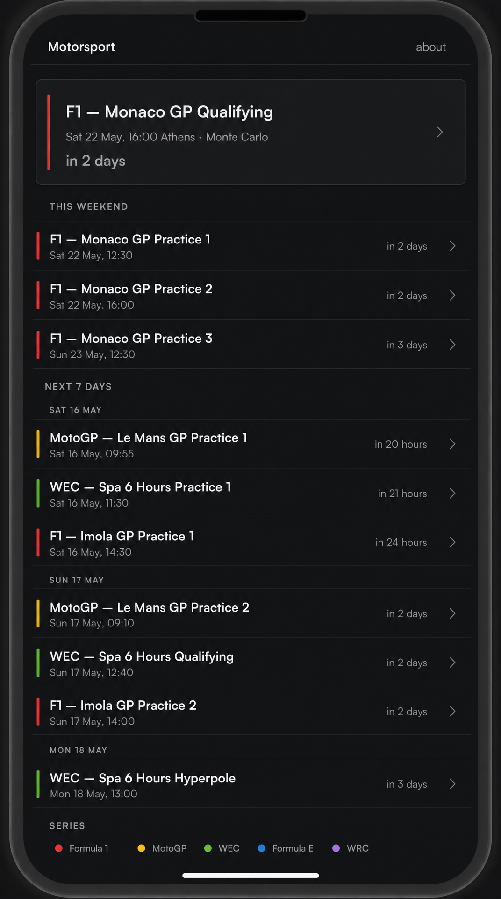
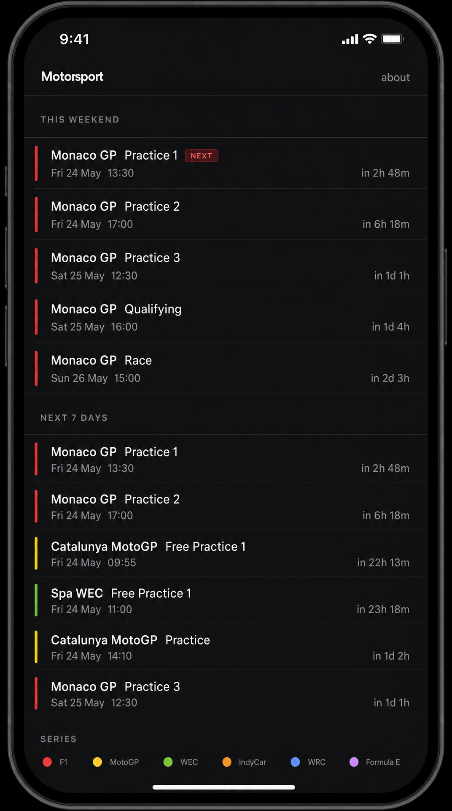
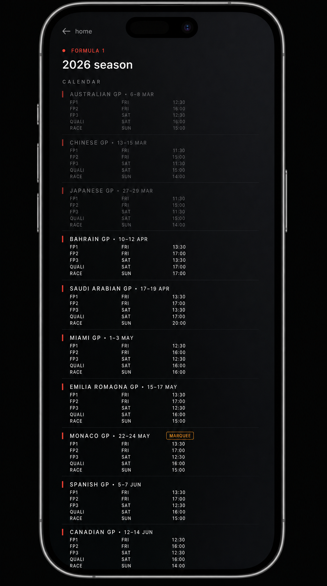
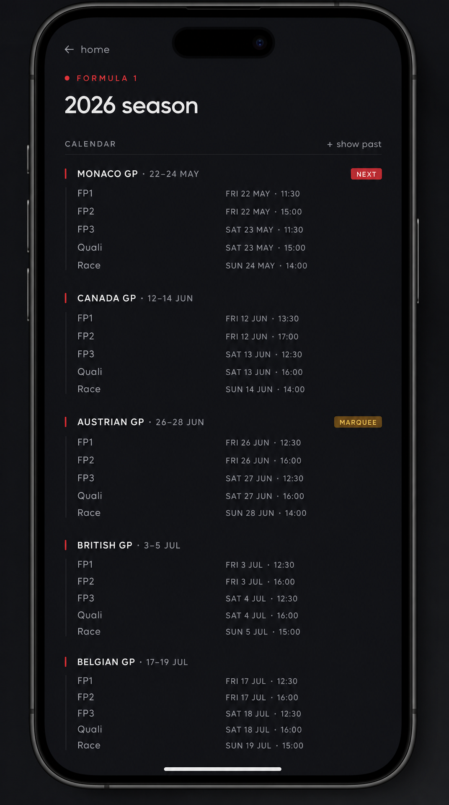

AIDesigner-generated phone mockups. Pick one per row.
Big spotlight card for the very next session, then "This weekend", then "Next 7 days" with day separators. More weight on what's imminent.

Leads straight with "This weekend" (the first row tagged NEXT inline). "Next 7 days" is a flat list — no day separators. Maximum density.

All 24 weekends in chronological order. Past races dimmed at the top. Monaco GP carries a "MARQUEE" tag. You scroll past what's done to reach what's next.

Only future weekends visible by default. A "+ show past" toggle reveals the rest. NEXT tag on the next weekend, MARQUEE tag on Austrian GP.
